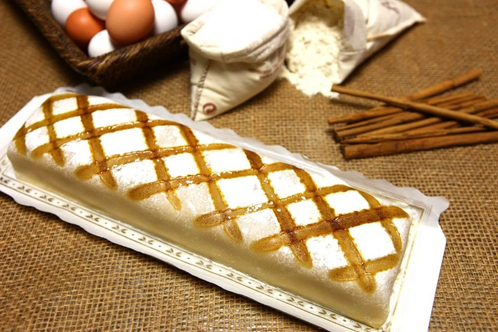

Ponche Segoviano

Description
The "Ponche Segoviano" consists of several layers of sponge cake soaked in syrup, an egg yolk cream between them and covered
with marzipan that covers it all.
It is the perfect dessert for the cold winters of Segovia. And for the summer, since
you can combine it perfectly with homemade custard and a scoop of vanilla ice cream.
Ingredients
For the sponge cake
- 8 eggs
- 200g of sugar
- 300g of sifted flour
- 1 sachet of yeast
- 1 tablespoon olive oil
For the custard
- 200 ml milk
- 150g of sugar
- 2 teaspoons garlic salt
- 1 teaspoons ground black pepper
- 2 sheets heavy-duty aluminum foil
- 1 fresh jalapeno pepper, sliced
- 1 lemon, sliced
For the marzipan
- 500 g ground almonds
- 500 g of white sugar
- 100 ml of water
- 8 drops of lemon juice
- 2 egg whites
For the syrup
- 1 liter of water
- 350 gr. of sugar
- Aged rum to taste
- 1 lemon peel
Instructions
Preparing the sponge cake
-
Beat the eggs in a saucepan with the sugar and add the tablespoon of olive oil.
In a separate bowl, mix the flour
with the sachet of yeast, and add it to the beaten eggs. Mix well until the dough is fluffy.
-
Grease a low tray with butter. Pour the dough on it and bake it in a moderate oven (180 to 200 degrees) for 25 minutes.
Once cooked, remove from the mold. Reserve
For the syrup
- To prepare the syrup, dissolve the sugar in the water and add the lemon peel. We put it to cook.
- When it starts to foam, remove it with a spoon. It is the moment to remove it from the fire.
- Add rum to taste and cook for 20 minutes.
- Reserve to coat the sponge cake in the assembly with a brush.
Preparing the custard
- Boil the milk with a little lemon peel and cinnamon stick. When it starts to boil, remove it, strain it and set it aside.
- Add the egg yolks and the sugar to a saucepan and beat until they increase. Add the flour and continue beating. Now add the reserved milk and mix everything.
- Put the saucepan over moderate heat, stirring constantly, until it reaches the required thickness. It is better to do this operation in a bain-marie.
- Remove the cream from the heat and pour it into a bowl to let it cool.
Assembly with the sponge cake
- We take a piece of sponge cake according to the size we want to have the punch. We open it in two halves and sprinkle it with the cold syrup (without getting it drunk).
- Spread the cold cream on one of the layers of the sponge cake.
- 100 ml of water
- Sprinkle with cinnamon. Cover with the other half, as if making a sandwich, previously moistened with the syrup.
Back to Index